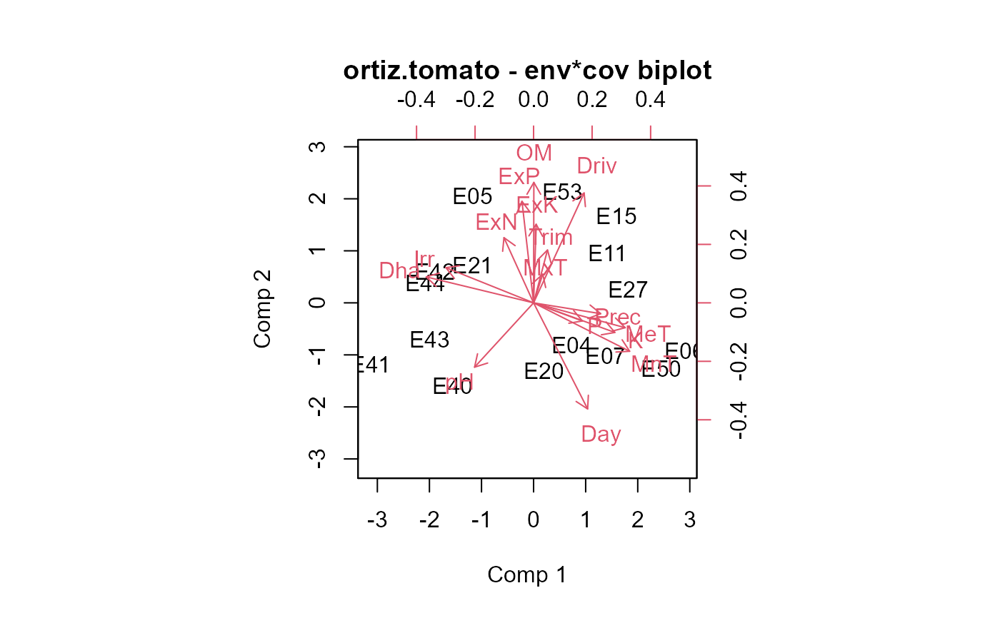

ortiz.tomato.RdMulti-environment trial of tomato in Latin America, weight/yield and environmental covariates
data("ortiz.tomato.covs") data("ortiz.tomato.yield")
The ortiz.tomato.covs data frame has 18 observations on the following 18 variables.
envenvironment
Daydegree days (base 10)
Dhadays to harvest
Drivdrivings (0/1)
ExKextra potassium (kg / ha)
ExNextra nitrogen (kg / ha)
ExPextra phosphorous (kg / ha)
Irrirrigation (0/1)
K potassium (me/100 g)
Latlatitude
Longlongitude
MeTmean temperature (C)
MnTmin temperature (C)
MxTmax temperature (C)
OM organic matter (percent)
P phosphorous (ppm)
pH soil pH
Precprecipitation (mm)
Tritrimming (0/1)
The ortiz.tomato.yield data frame has 270 observations on the following 4 variables.
envenvironment
gengenotype
yieldmarketable fruit yield t/ha
weightfruit weight, g
The environment locations are:
| E04 | Estanzuela, Guatemala |
| E05 | Baja Verapaz, Guatemala |
| E06 | Cogutepeque, El Salvador |
| E07 | San Andres, El Salvador |
| E11 | Comayagua, Honduras |
| E14 | Valle de Sabaco, Nicaragua |
| E15 | San Antonio de Belen, Costa Rica |
| E20 | San Cristobal, Dominican Republic |
| E21 | Constanza, Dominican Republic |
| E27 | Palmira, Colombia |
| E40 | La Molina, Peru |
| E41 | Santiago, Chile |
| E42 | Chillan, Chile |
| E43 | Curacavi, Chile |
| E44 | Colina, Chile |
| E50 | Belem, Brazil |
| E51 | Caacupe, Paraguay |
| E53 | Centeno, Trinidad Tobago |
Used with permission of Rodomiro Ortiz.
Rodomiro Ortiz and Jose Crossa and Mateo Vargas and Juan Izquierdo, 2007. Studying the Effect of Environmental Variables On the Genotype x Environment Interaction of Tomato. Euphytica, 153, 119--134. https://doi.org/10.1007/s10681-006-9248-7
# \dontrun{ library(agridat) data(ortiz.tomato.covs) data(ortiz.tomato.yield) libs(pls, reshape2) # Double-centered yield matrix Y <- acast(ortiz.tomato.yield, env ~ gen, value.var='yield') Y <- sweep(Y, 1, rowMeans(Y, na.rm=TRUE)) Y <- sweep(Y, 2, colMeans(Y, na.rm=TRUE)) # Standardized covariates X <- ortiz.tomato.covs rownames(X) <- X$env X <- X[,c("MxT", "MnT", "MeT", "Prec", "Day", "pH", "OM", "P", "K", "ExN", "ExP", "ExK", "Trim", "Driv", "Irr", "Dha")] X <- scale(X) # Now, PLS relating the two matrices. # Note: plsr deletes observations with missing values m1 <- plsr(Y~X) # Inner-product relationships similar to Ortiz figure 1. biplot(m1, which="x", var.axes=TRUE, main="ortiz.tomato - env*cov biplot")#biplot(m1, which="y", var.axes=TRUE) # }